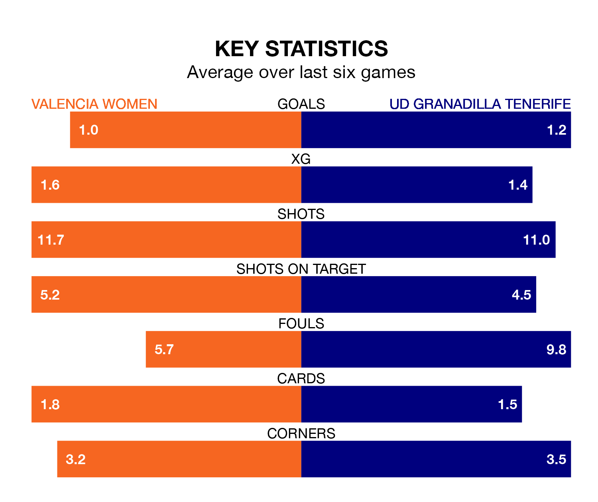

UD Granadilla Tenerife are strong favourites to take all three points despite Valencia Women's home advantage in Saturday's early match at the Estadio Antonio Puchades.
*Betting Company* are offering odds of 1.98 on Granadilla Tenerife sealing the win, with the visitors sitting ninth in Primera Division Women table.
Valencia, who are 11th in the league and four points behind Granadilla Tenerife, are priced at 2.79 to win. A draw is set at 3.05.
Valencia are in bad form in Primera Division Women, with one win and five losses from their last six games.
With a win and three draws over that period, Granadilla Tenerife's form is better – they have taken six points from 18, compared to the home team's three.
In the last 10 years, Valencia and Granadilla Tenerife have played each other on 16 occasions. Valencia won four of them, Granadilla Tenerife eight, and they drew four times.
On average, Valencia scored 1.1 goals and Granadilla Tenerife 1.3 in those matches.
Their last meeting was on March 4, when Valencia won 2-1 at home.
With 16 goals in 14 games so far this season, Valencia are scoring at below the league average rate with 1.1 goals per game. And they are conceding more than average, letting in 31 goals at a rate of 2.2 per game.
The visitors are also below average scorers, with 1.3 goals per game, compared to a league average of 1.6. They have conceded 1.6 goals per game.
In Aline Villares Reis, Granadilla Tenerife can rely on one of the league's safest pair of hands. She has kept four clean sheets in her 14 appearances this season in Primera Division Women.
In Valencia's net, Antonia Ignacia Canales Pacheco has two clean sheets in seven games. She has conceded a goal every 43 minutes, 40% more often than the 60 minutes between goals for Villares Reis.
Valencia's last match was on Sunday, a 1-0 loss against Eibar Women.
Granadilla Tenerife drew 1-1 with Athletic Club Women last time out, also on Sunday, with Thais Cristina da Silva Ferreira on the scoresheet.
Updated: 09:07 (UTC), 24/01/24